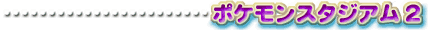
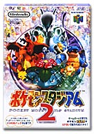
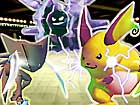
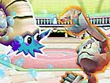
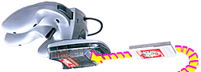
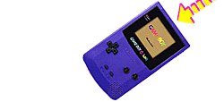

| ポケモンバトルに夢中になってる全国のトレーナーに |
|  |
|  | 発売中 5,800円 『ポケットモンスター』赤・緑・青・ピカチュウのいずれかを持っていて、通信対戦にハマっているお子さんに喜ばれそうなのが、この『ポケモンスタジアム２』。ゲームボーイ版の通信対戦や、ポケモンリーグの熱気を、NINTENDO64で再現するソフトです。(ただし、金・銀には対応していませんのでご注意ください。) |
| ポケモンリーグとは、自分が育てたポケモンとほかのトレーナーが育てたポケモンとを戦わせ、勝ちあがっていくトーナメント戦のこと。ゲームの中だけでなく、実際にこの現実世界でも夏休みなどに開催され、全国の子供たちが“ポケモンマスター”を目指して、熱戦を繰り広げているんですヨ！ | |
|  | |
| 別売の64GBパック（1,400円）を使えば、ゲームボーイで育てたポケモンがそのまま使えるのも魅力的。このソフトをプレゼントして、未来のポケモンマスターを“英才教育”しちゃいましょ!! 現在、前作の『ポケモンスタジアム』をお使いの方も、これを機にグレードアップしてみては？ | |
|  |
|  |
| ↓さらに詳しい情報はこちら 【http://www.nintendo.co.jp/n01/n64/software/nus_p_cp2j/index.html】 |
 |
 |
|
 |